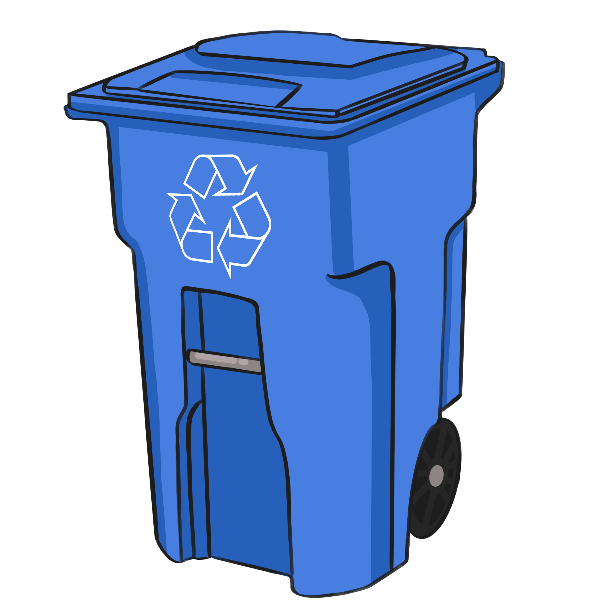

You need to enable JavaScript to run this app.
How well do you know your waste bins?
Try to drag the waste items into the correct bin for item, make them rounded, better background/fonts
Recycling

Compost
Landfill